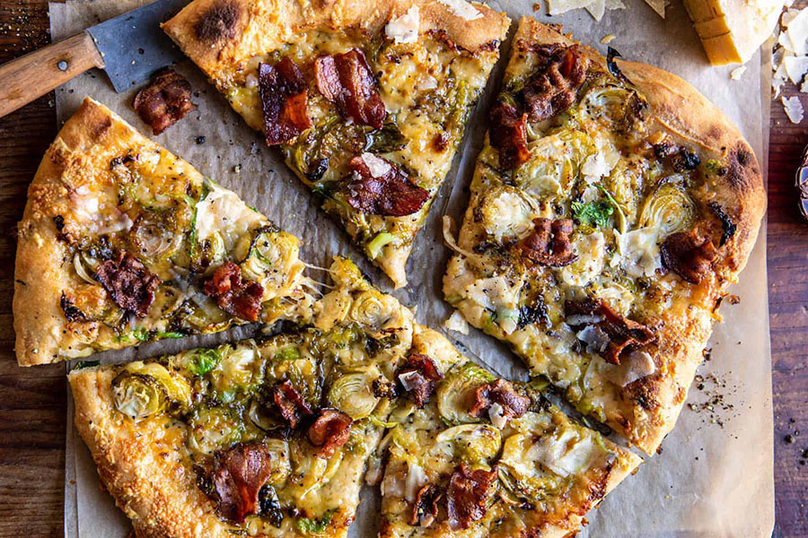

This Shredded Brussels Sprout and Bacon Pizza is an easy weeknight pizza that everyone loves. Its that salty bacon on top that really seals the deal. Homemade pizza dough topped with a tangy, sweet, and spicy balsamic sauce, melty Havarti cheese, shaved brussels sprouts, and crispy bacon. All baked in a super hot oven until the cheese is melted and bubbly,the brussels sprouts roasted and just lightly charred, and the crust golden perfect. Every last bite of this pizza is delicious. And all those sprouts on top make this pizza kinda of like eating salad with a side of cheesy pizza!

Ingredients
1/2 pound pizza dough, at room temperature
2 tablespoons extra virgin olive oil
1 tablespoon honey
1 tablespoon balsamic vinegar
1 small shallot, thinly sliced
2 cloves garlic, grated
1 tablespoon fresh thyme leaves
crushed red pepper flakes
kosher salt and black pepper
1 1/2 cups shredded brussels sprouts
1/2 cup grated manchego or parmesan cheese
1 1/2 cups shredded fontina or Havarti cheese
4 thick-cut slices of bacon, chopped
Steps
Preheat the oven to 450° F. Grease a large baking sheet with olive oil.
In a small bowl, combine 1 tablespoon olive oil, the honey, balsamic vinegar, shallot, garlic, thyme, and a pinch each of red pepper flakes, salt, and pepper.
In a separate bowl, toss together the remaining 1 tablespoon olive oil, the brussels sprouts, parmesan, and a pinch of salt and pepper.
On a lightly floured surface, push/roll the dough out until it is pretty thin (about a 10-12 inch circle). Transfer the dough to the prepared baking sheet.
Spread the dough with the olive oil/balsamic herb mix. Add the Havarti cheese, then layer the brussels sprouts over the cheese. Bake for 10-15 minutes or until the crust is golden and the cheese has melted.
Meanwhile, cook the bacon until crisp. Top the pizza with the crispy bacon and freshly shaved parmesan. Slice and enjoy!